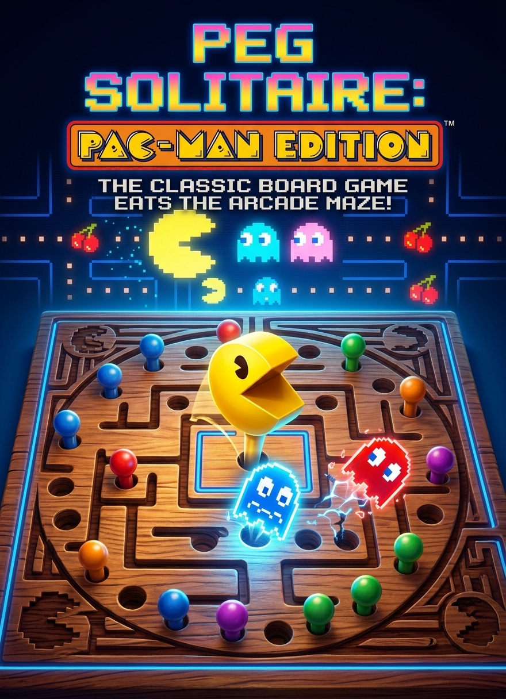

Peg Solitaire: Pac-Man Edition
ZoneArcade transforma el solitario clásico en una edición arcade inspirada en Pac-Man, con un tablero de estética retro y personajes del universo del juego.
Desde la franja superior de la partida puedes alternar entre fichas de fantasmas y frutas pixeladas (frutilla, cereza, naranja y manzana).
Comentarios
Pepito123 Hace 8 horas
Muy bueno el juego y sobre todo complicado.